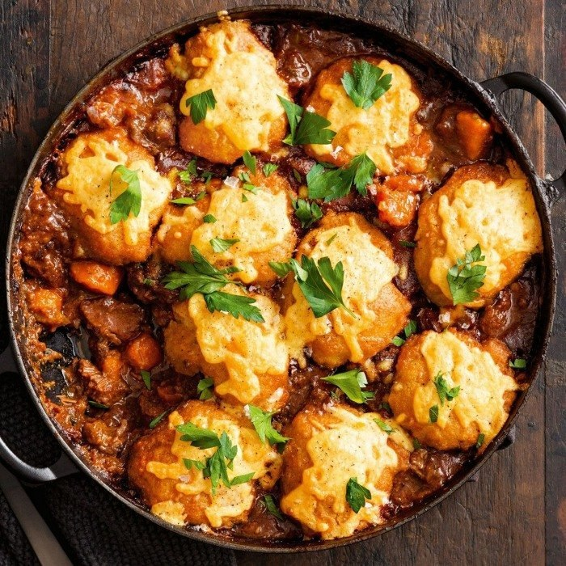
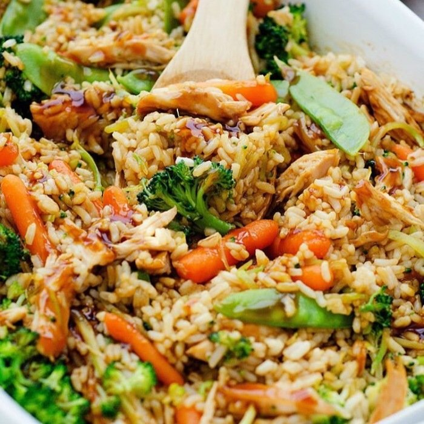

Tonight
Chicken Handi
A slow, yogurt-rich curry: fried onions, ginger, toasted cumin and coriander, finished with cream and fenugreek.
4 of 16 ingredients
62% score
71% comfort


Tonight
A slow, yogurt-rich curry: fried onions, ginger, toasted cumin and coriander, finished with cream and fenugreek.
Indian, chicken
30 to 60 min estimated from the steps
You'll need a large pot or wok and a bowl for the yogurt.
Warm near-black surfaces so the food photo is the only saturated thing on screen. One warm colour for the primary action, one cool colour for state. Ratios measured with the WCAG formula against the surface named in the row.
| Colour | Role | Contrast |
|---|---|---|
| #15120f | surface (page) | |
| #221d19 | elevated (card, sheet, inputs) | |
| #3a332c | line (outlines, dividers) | |
| #f4ede4 | text 1, titles | 16.1 on surface, 14.4 on elevated |
| #b9aea1 | text 2, body | 8.6 on surface, 7.7 on elevated |
| #958b7e | text 3, captions, step numerals | 5.5 on surface, 4.9 on elevated |
| #e9a23b | accent: the primary action only | 8.6 on surface; #1a1408 text on it 8.5 |
| #8fcfb8 | state: saved, active chip, focus ring | 10.5 on surface, 9.4 on elevated |
One family, Instrument Sans, at two weights. It is a geometric grotesque with a slightly narrow set and sharp terminals, so titles read as decisive rather than rounded, and it has real italics and tabular figures for the ingredient measures. Fredoka One made every heading a joke; Nunito's rounded terminals did the same quietly in the body. Instrument Sans at 600 with tight tracking does the display work without a second face.